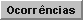

Consultar Recebimentos [ Voltar ]
Utilize este
formulário para localizar e abrir registros de recebimentos cadastrados
e para registrar
ocorrências em um recebimento.
O formulário "Consultar
recebimentos" encontra-se dentro do menu "Recebimento".
Ao clicar no menu, a seguinte tela será exibida:
Execute os passos abaixo para localizar e abrir o recebimento
desejado:
1º Passo: utilize os filtros da pesquisa para
localizar o registro desejado. Clique em um recebimento
para abri-lo na tela "Recebimento".
Observação:
para mais informações sobre as funcionalidades de pesquisa, ver o
manual Introdução
ao Sistema.
Registrar ocorrências
[ Voltar ]
Para acessar a tela de
ocorrências, é preciso abrir o recebimento para o qual se deseja
registrar a ocorrência. Em seguida,
clique no botão .
A seguinte tela será exibida:
Siga os passos abaixo para registrar uma ocorrência referente ao
recebimento:
1° Passo: preencha
os detalhes desta ocorrência. Todos os campos são
obrigatórios.
- Cód. da
ocorrência.
Este campo apresenta por padrão um sinal de mais "+". Desta forma,
assim que a ocorrência é salva, é-lhe atribuída o próximo número
disponível.
- Motivo.
Selecione um dos motivos disponíveis. Os motivos disponíveis são:
- Produto(s)
divergente(s) da nota fiscal;
- Produto(s)
divergente(s) da nota de empenho;
- Quantidade(s) divergente(s)
da nota fiscal;
- Quantidade(s) divergente(s) da
nota de empenho;
- Divergência
de valores na nota fiscal;
- Embalagem
com material diferente da identificação;
- Embalagem
sem identificação;
- Embalagem
violada;
- Atraso
na entrega;
- Outros.
- Outro.
Se nenhum motivo se adequar perfeitamente à ocorrência, selecione o
motivo Outros e
informe neste campo o motivo em questão.
- Data.
Especifique aqui a data em que esta ocorrência foi constatada. Dicas para preenchimento de
campos de data:
- Data
atual: digite o sinal . (ponto) e
pressione a tecla "Enter" para que o sistema retorne a data atual;
- Data
do mês corrente: digite o dia do mês e
pressione a tecla "Enter" para que o sistema retorne o mês e ano
correntes;
- Dias
a contar da data atual: digite o sinal + (mais) ou - (menos)
antes do número de dias em em referência à data atual e pressione a
tecla "Enter" para a data anterior ou posterior à data atual.
- Observações.
Deposite neste campo informações adicionais sobre esta ocorrência.
2° Passo: clique no
botão  para salvar a
ocorrência. Para cadastrar outra ocorrência, clique no
botão para salvar a
ocorrência. Para cadastrar outra ocorrência, clique no
botão  [Novo]
e repita os passos 1 e 2. [Novo]
e repita os passos 1 e 2.
Clique no botão  [Voltar]
para retornar à tela principal do recebimento. [Voltar]
para retornar à tela principal do recebimento.
Ir
para o topo da página
|